Inicio
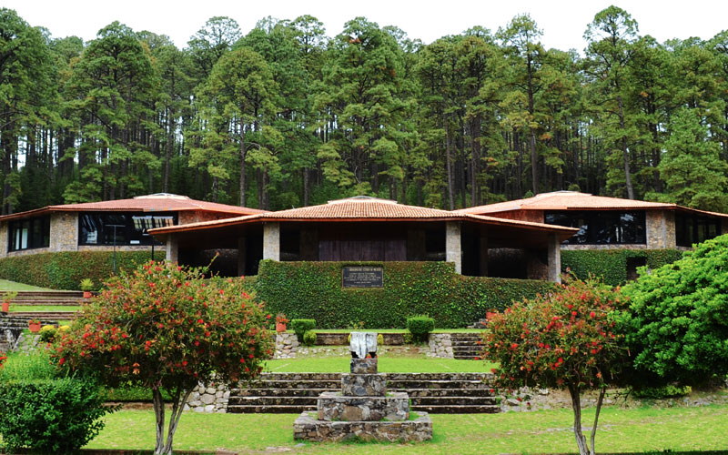
El Centro Ceremonial Mazahua es uno de los espacios culturales más importantes del Estado de México. Se encuentra en la comunidad de Santa Ana Nichi, municipio de San Felipe del Progreso, rodeado de bosques de pino y encino. Este lugar fue creado para preservar, fortalecer y difundir la cultura, tradiciones y costumbres del pueblo mazahua.
Sobre Nosotros
El Centro Ceremonial Mazahua representa un punto de encuentro para las comunidades mazahuas. En sus instalaciones se realizan ceremonias, asambleas, exposiciones artesanales y actividades culturales que permiten conservar la identidad de uno de los pueblos indígenas más importantes del Estado de México.
Misión y Visión
| Misión | Visión |
|---|---|
|
Preservar, promover y difundir la cultura mazahua mediante actividades culturales, educativas y ceremoniales que fortalezcan las raíces y tradiciones de las comunidades indígenas. |
Ser un espacio de referencia cultural que impulse el reconocimiento, respeto y conservación del patrimonio histórico, artístico y espiritual del pueblo mazahua para las futuras generaciones. |
Servicios y Actividades
| Servicios | Actividades | Video |
|---|---|---|
|
|
|
Comunidades y Visitantes
El Centro Ceremonial recibe a integrantes de comunidades mazahuas, estudiantes, investigadores, turistas nacionales e internacionales, además de organizaciones interesadas en la preservación de la cultura indígena mexicana.
Galería
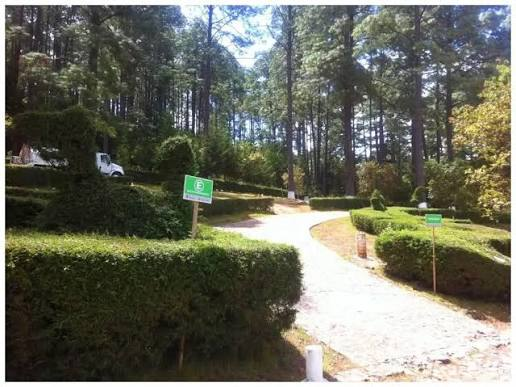
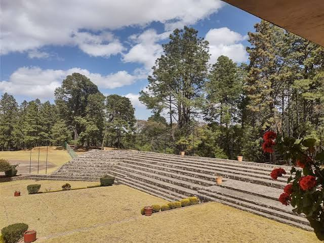
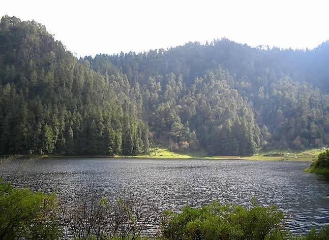
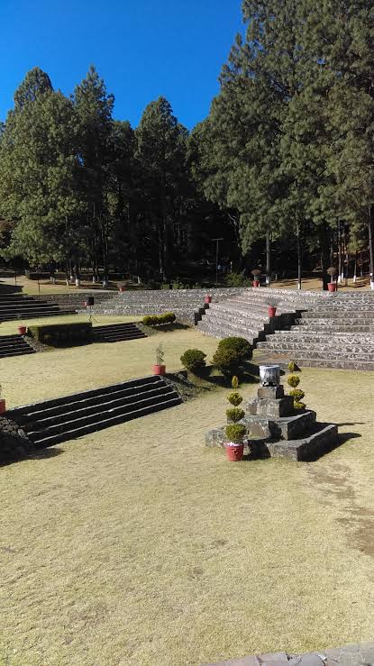
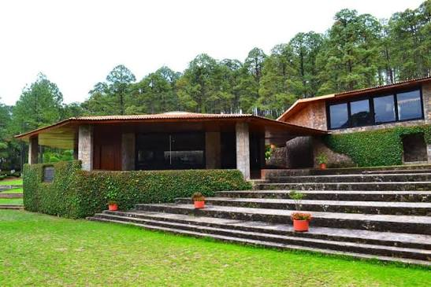
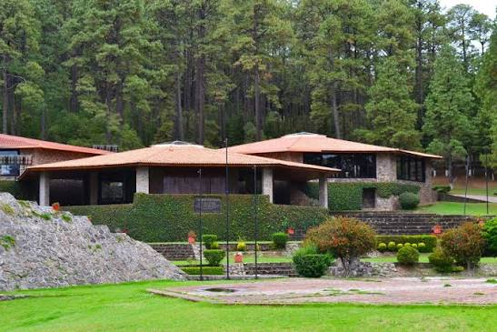
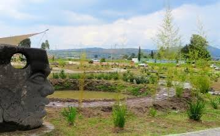
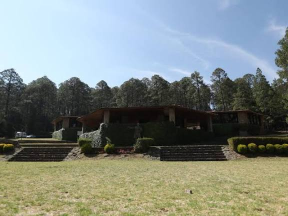
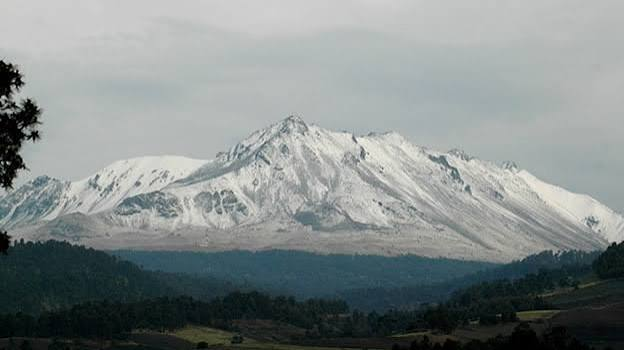
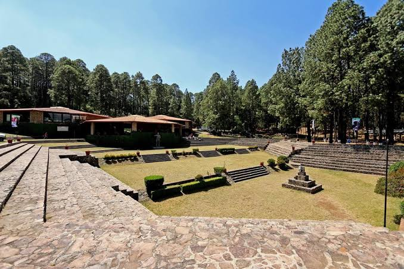
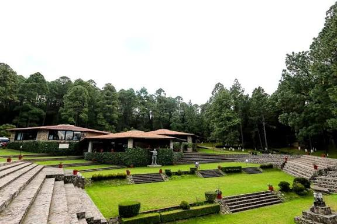
Importancia Cultural
El Centro Ceremonial Mazahua es considerado un símbolo de identidad para el pueblo mazahua, ya que permite conservar conocimientos, costumbres, lengua, artesanías y expresiones culturales transmitidas de generación en generación.
Ubicación
Formulario de Contacto
Síguenos en nuestras redes sociales
Aviso de Privacidad
Los datos proporcionados mediante este sitio web serán utilizados únicamente para fines informativos y de contacto.